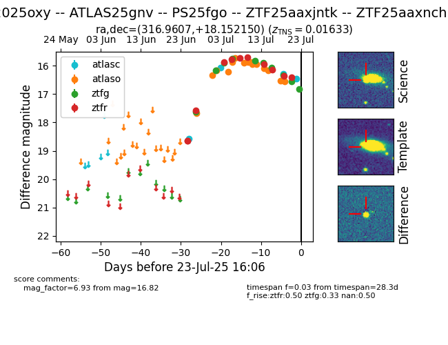

Target ZTF25aaxjntk at 2025-07-23 16:06, see:
FINK: fink-portal.org/ZTF25aaxjntk
Lasair: lasair-ztf.lsst.ac.uk/objects/ZTF25aaxjntk
ALeRCE: alerce.online/object/ZTF25aaxjntk
TNS: wis-tns.org/object/2025oxy
YSE: ziggy.ucolick.org/yse/transient_detail/2025oxy
alt names
ZTF25aaxnchn (ztf)
ZTF25aaxjntk (fink)
2025oxy (tns,yse)
ATLAS25gnv (atlas)
PS25fgo (panstarrs)
coordinates:
equatorial (ra, dec) = (316.9607,+18.15215)
galactic (l, b) = (66.4014,-19.39547)
photometry
last atlasc=16.46, atlaso=16.55, ztfg=16.82, ztfr=16.41
4 atlasc, 15 atlaso, 10 ztfg, 11 ztfr detections
